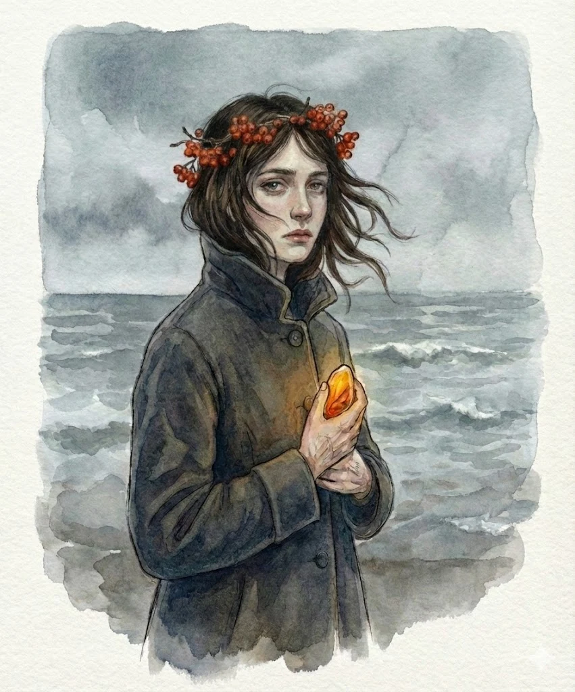
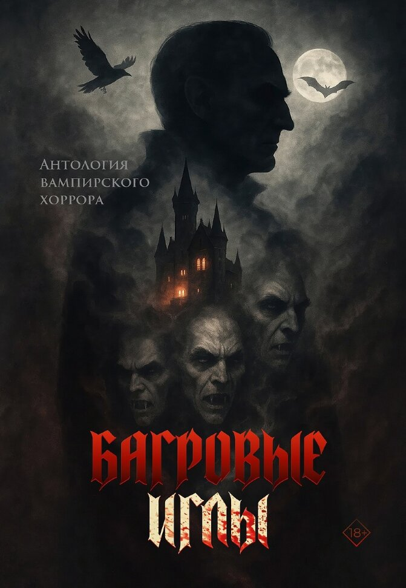

Фрагмент

Широкие лопасти парома врезали темную морскую гладь, оставляя на поверхности нежнейшую пену. Ида, стоявшая на самом носу, перегнулась почти пополам — мать бы воскликнула «куда полезла, обязательно же вывалишься!» — и с замиранием сердца ловила мелкие брызги. Балтийское море отливало гладью, похожей на мокрый асфальт; в белой вате облаков можно было разглядеть закат, похожий на алый рот раны. В Питере небо свинцовое, нависает над головой, а здесь Ида ощущала себя крошечной посреди стальносерых просторов. На пароме было немноголюдно — в основном местных, возвращающихся домой на косу, да парочка таких же, как она, туристов, решивших, что ноябрь — идеальное время для отпуска в бывшей Восточной Пруссии.
«Но они-то чужаки, а я своя», — подумала Ида с потаенной гордостью. Она исправно любила маяки и развалины-призраки, оставшиеся от прежних хозяев земли, песчаные пляжи, поросшие облепихой и можжевельником, — и носила на руке изящный браслет из солнечного камня. Ида украдкой вытащила телефон, сразу погрустнела, спрятала его и снова устремила взгляд к горизонту, где дымчато-серое море и небо сходились в одну полосу.
Её бегство, — отдых, — упрямо повторила про себя Ида, от жизни в Питере и от него было передышкой в отношениях, которые зашли в тупик. Они только что потеряли ребенка, и Виктор, как показалось Иде, с облегчением отпустил жену «на отдых», когда та обмолвилась о желании увидеть родные места. В последнее время дома была тяжелая атмосфера — оба они существовали каждый в своем пузыре, стараясь обходить неудобную тему, как она истекая кровью, молилась, чтобы все это прекратилось, господи, чтобы это вышло из ее тела,
Потеряла долгожданного ребенка на позднем сроке — и Ида чувствовала себя изгоем. Все вокруг говорили с ней, как с умалишенной, но она читала в их глазах тайное осуждение: мол, такая уж неполноценная, не смогла выносить, жалкое ничтожество. Храбрилась, глотала кислый ком в горле и пыталась снизить градус напряженности, зная, что это клеймо отпечаталось на ней навсегда.
Паром причалил к Южному молу, турбины стихли, и Ида с сожалением отошла от своего наблюдательного поста. Хорошо бы плыть дальше, оставляя позади берег — куда-нибудь на край света, где есть только вода, солнце и небо. Может, плюнуть на всё? Продать квартиру в Питере, купить яхту и стать самой себе и капитаном, и рулевым?
Он не написал ни строчки — а прошло уже три дня с её отъезда.
Балтийская коса была дикой, но таила не меньше диковинок. Среди зарослей шиповника, можжевельника и папоротника торчали кирпичные рёбра немецких руин. Через пролив проступал силуэт маяка Пиллау, будто выплывающий из туманной дымки. Шестьдесят километров суши, отрезанной морем, где жизнь текла по своим законам. В заброшенном ангаре Нойтиф, где когда-то стояли новенькие, красивые истребители — авиационная гордость — теперь гулял ветер. Дот на берегу морщинился от соли и солнца. Призраки, призраки повсюду: застрявшие во временной петле, прилипшие к смоле плачущих деревьев.
На часах — без десяти девять. Время последнего парома на большую землю. Ида намеренно задержалась, чтобы поймать луч маяка, рассекающий чернильную тьму. Зовущий домой.
— Рейс отменён. Шторм надвигается, не пойдёт никто в такую погоду, — бросила кассирша, явно торопившаяся домой. Из окошка на Иду дышало теплом и запахом сдобы.
— Но… как же? Здесь дороги — всего ничего, — растерялась девушка, теребя банковскую карту. Пара бедолаг за её спиной поддержала единодушным ворчанием.
— Сказано, отменён. Утра ждите, — кассирша захлопнула окошко, оставив Иду и её спутников мёрзнуть на пристани. Не соврала про непогоду: ветер продувал куцее шерстяное пальтишко насквозь, швырял в лицо колючие брызги, путал чёрную косу в солёные узлы.
— Тут гостиница была… Может, успеем? — мужчина махнул рукой в сторону посёлка Нойтиф. Ида, прижимая воротник к горлу, влилась в импровизированный отряд.
Повезло. В уютной, недавно отстроенной гостинице оставались номера. Плюс несезона, — мысленно усмехнулась Ида, принимая ключ с номерком «12». Пообещали даже ужин, хоть кухня уже закрывалась. Через полчаса она грела ладони о глиняный горшок с жарким под сырной корочкой. Вот оно, счастье: тепло, еда, крыша. И больше ничего не надо.
Взгляд скользнул по людям в ресторане — почти всех она видела, пока добиралась до гостиницы. Мужчина в дублёнке из девяностых, с центральнорусским акцентом; немолодая пара с дочкой-подростком, уставившейся в окно. Потом Ида выцепила новых: женщина строгой, профессорской красоты с прямой спиной, обводившая пальцем ободок чашки. Рядом — молодой человек. Не в оверсайз, как вся молодёжь, а в тёмно-синем джемпере, подчеркивающим стройную фигуру. Светлые кудри почти касались ушей.
Мягкие, наверное... — мысль пронзила, заставив смущённо сжать вилку.
Он не поворачивался, а Ида, обычно равнодушная к чужим мужчинам, изводилась любопытством. Наконец обернулся — будто её взгляд прожёг спину. Льдисто-голубые глаза обожгли внезапно, щёки вспыхнули предательски. Отвернись. Смотри на эту дурацкую рыбу на стене... Но взгляд снова полз к его столу, будто втянутый магнитом.
— Тоже здесь застряли?
Голос над ухом заставил вздрогнуть, забыть вдох. Перед ней стоял он — тот самый юноша. Взгляд уже без льда, с любопытством.
